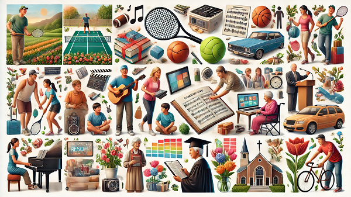

My Hobbies and Interests

Tennis:
Actively play and coach tennis, promoting fitness, discipline, and teamwork.Music:
Teach music, sing, and transcribe musical notes; passionate about classical music and hold a certification in ABRSM Theory of Music from Grades 1 to 4.Community Service:
Engage in volunteer work, particularly in caregiving for the elderly, supported by a Diploma in Caregiving and certifications in CPR, AED, and First Aid.Gardening and Agriculture:
Enjoy gardening, husbandry, and fisheries, appreciating nature and sustainable practices supported by certification in Agricultural Science - Gardening, Animal Farming and Aquaculture.Research:
Dedicate time to exploring new topics and staying informed, which supports continuous learning.Continuous Learning:
Actively pursue personal and professional development through various educational resources.Photography:
Capture moments and create visual stories, focusing on nature and community events.Public Speaking:
Engage in public speaking and presentations, effectively communicating ideas and inspiring others.Presentation Design:
Create impactful presentation slides that convey complex information clearly and creatively.Faith-Based Activities:
Actively participate in church-related activities and community outreach, reflecting a strong commitment to faith.